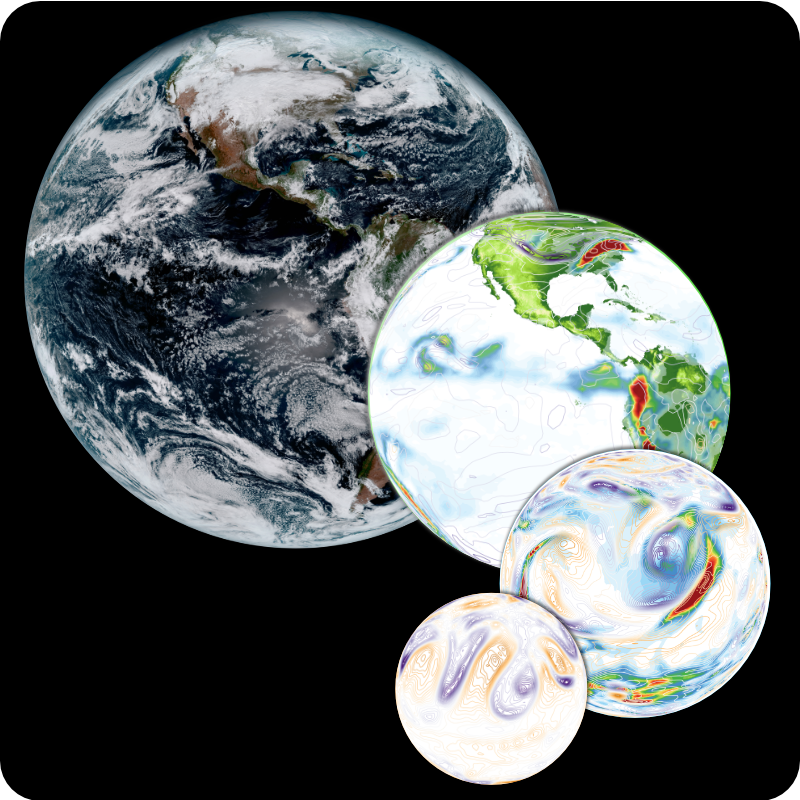

I am interested in the role that clouds play in the climate system. Clouds embody complicated, delicate interactions of atmospheric dynamics and thermodynamics, which come together to substantially alter the state of the atmosphere. Because so many scales are involved, from sub-millimeter (e.g. nucleation) to thousands of kilometers (e.g. planetary-scale waves), from seconds to years, the representation of clouds in climate models is challenging, and has remained a source of uncertainty in projections of future climate.
My work uses these models to try to (1) better understand how clouds interact with the climate system and (2) to improve the representation of clouds in climate models.
Research Areas

Climate models provide our most comprehensive tools for understanding the climate system. In my work, I try to contrive numerical experiments with climate models that help understand both how the real world works and how the model works; occasionally those are the same thing. Wherever possible, I also use satellite observations and reanalyses.
I employ methods of weather prediction to understand sources of error in climate models. Running in forecast mode allows direct comparison with observations and evaluation of process-level diagnostics. This approach also provides opportunities to examine sources of predictability in the climate system, including the role of coupling between the atmosphere and other climate system components in making skillful predictions.
The climate system is full of feedback loops, which are ultimately responsible for the chaotic nature of the system and the difficulty in predicting both weather and climate. I am interested especially in cloud feedbacks. This includes feedbacks between clouds and their environment on short timescales and also the classic cloud-climate feedback which has plagued climate sensitivity estimates for decades.
For technical details about models, methods, and diagnostics, see the Details page.